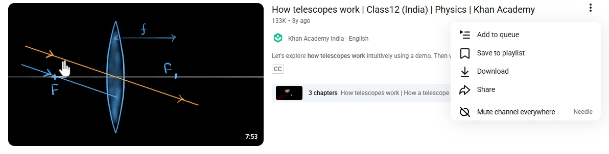

Guide 03·Mute
How to block a YouTube channel, search included.
Updated 28 October 2026
Short answer
YouTube has no way to keep a channel out of your search results. Its Don't recommend channel only thins out recommendations. Needle adds Mute channel everywhere to the ⋮ menu on every video: one click and that channel is gone from search, Home, Subscriptions, the videos next to the one you're watching, and Shorts. You can mute a word too, and anything with it in the title goes.
01·On YouTube
What YouTube's own options do
Don't recommend channel, in the ⋮ menu on Home and beside videos, tells the recommendations to ease off that channel. It doesn't touch search, so the channel is still there the next time you look something up. Not interested works on one video at a time.
02·With Needle
Mute a channel with Needle
- Find any video from the channel: in search, on Home, or next to a video.
- Open its ⋮ menu.
- Choose Mute channel everywhere (in a narrow menu it just says Mute channel).

Its videos go at once, from every page, and stay gone as you scroll. Changed your mind? Press Undo, or unmute it from the popup.
03·Shorts
Shorts too
On Home and in search, YouTube doesn't say whose a Short is, which is why most blockers let them through. Needle asks YouTube, the same way any website that embeds a video does, and a muted channel's Shorts go with its videos.
04·Words
Mute a word instead
Tired of a topic rather than a channel? Open the Needle popup and add a word under Muted words. Any video with it in the title disappears, whoever made it. A phrase works too.
05·Moving over
Coming from another blocker
Use Import in the popup to bring your list over, one channel or word per line. Export saves yours as a text file.
06·Questions
Questions?
Can you block a channel on YouTube?
Not from your search results. Don't recommend channel lowers how often it's recommended, and Block user only stops someone commenting on your own channel. Neither hides a channel from search.
Where does a muted channel disappear from?
Search results, Home, Subscriptions, the videos next to the one you're watching, and Shorts on Home and in search. Its own channel page still opens if you go there on purpose.
Can I undo it?
Yes. Undo appears the moment you mute. Later, the Needle popup lists every channel you've muted with a button to bring it back, and the ⋮ menu on its videos says Unmute channel.
Can I mute a word or a topic?
Yes. Add it under Muted words in the Needle popup and any video with it in the title is hidden, from any channel. It matches whole words, so muting AI leaves AIRBUS alone.
Can I bring my list from another blocker?
Yes. Import in the popup reads a text file with one channel or word per line: handles, channel ids and names all work. Export saves yours the same way.
Is it free, and does my list go anywhere?
Free, with no account. Your muted list stays on your computer and is never sent anywhere.